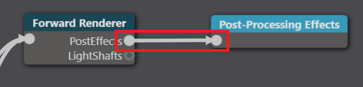

ポストエフェクト
ポストエフェクト（Post effects） は通常、ゲームがフレームのレンダリングを完了した後、UI が描画される前に適用されます。ポストエフェクトは、より自然でリアルな表現や、映画のようなスタイリッシュな効果など、画像の調整や装飾のために使用することができます。

ポストエフェクトは通常、画像に対して適用されます。つまり、頂点やメッシュとは関係ありません。ポストエフェクトは、各ピクセルの色の値のみ（場合によっては深さも）を扱います。
一般的には、以下のような項目でポストエフェクトの設定を行います。
- 入力バッファ（色、深度など）
- 1 つ以上の出力バッファ
- レンダリングパス内でのポストエフェクトの振る舞いをカスタマイズするパラメータ－
Stride には定義済みのポストエフェクトがいくつか用意されています。また、システムを拡張して独自の色変換エフェクトを作ることもできます。
Note
深度を考慮したポストエフェクト（被写界深度、アンビエント オクルージョン、ローカル反射など）では、MSAA（マルチサンプル アンチエイリアシング）が無効になります。
ポストエフェクトの追加と編集
ポストエフェクトの追加と編集は、グラフィックス コンポジターで行います。
アセットビューで、グラフィックスコンポジターアセットをダブルクリックします。

グラフィックスコンポジターエディターが開きます。

Post-processing effects ノードを選択します。
Tip
Post-processing effects ノードが存在していない場合は、右クリックして [Create] > [post-processing effects] を選択し、作成してください。そして、新しいフォワードレンダラーノードの PostEffects スロットをクリックし、Post-processing effects ノードまでドラッグしてください。 
プロパティグリッドで、使用したいポストエフェクトを有効にします。
それぞれのポストエフェクトの詳細やプロパティについては、以下のページをご覧ください。